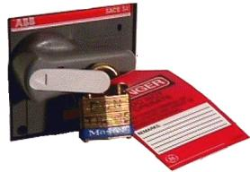

Press the left-pointing arrow on the end of the handle to expose the location where the lock and tag can be placed.
Lock and tag out the PDU INPUT circuit breaker as shown in Step .
Illustration 6: PDU Main Input Circuit Breaker Locked and Tagged Out

Illustration 7: PDU Phase Indicators and Test Points